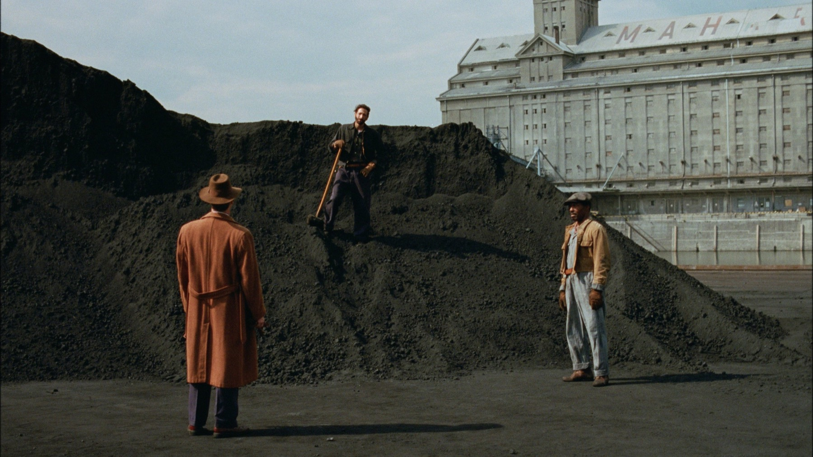
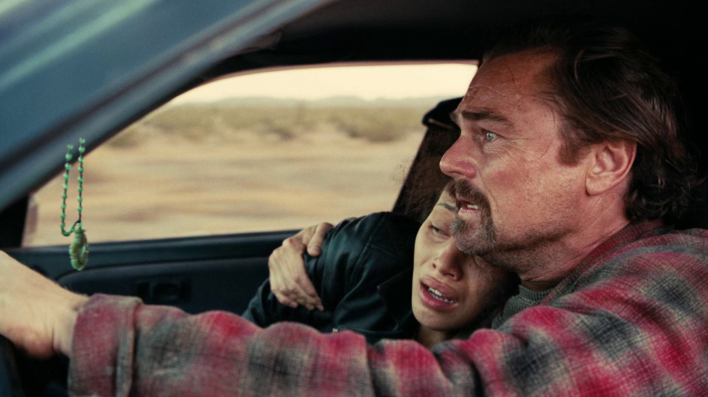
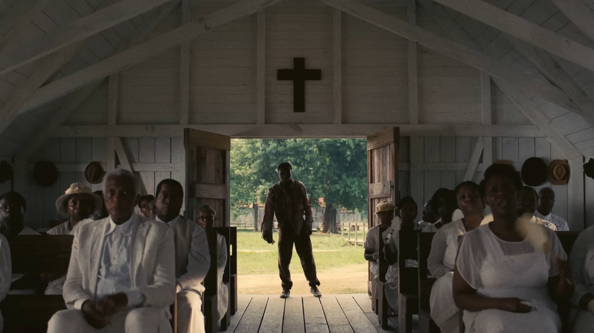
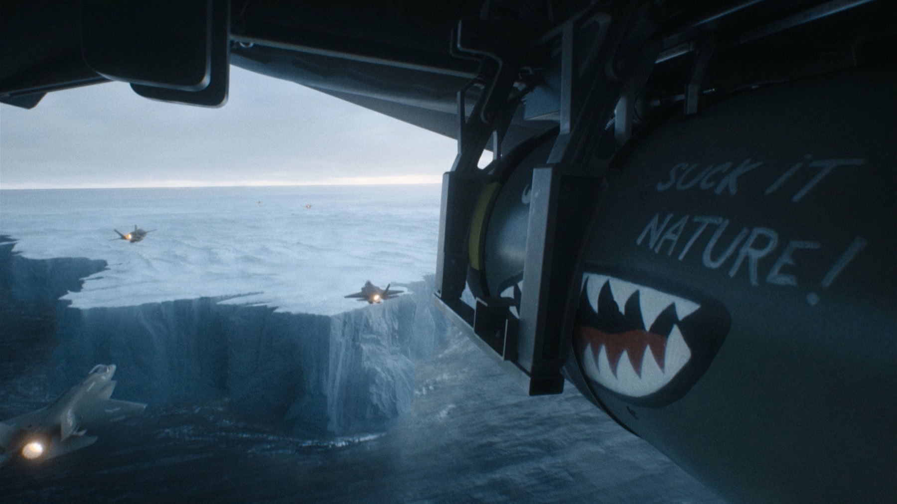

La rivincita della pellicola: VistaVision e IMAX
Da The Brutalist a The Odyssey, passando per Sinners e Digger: il formato più antico è diventato il più ambito di Hollywood
Fino a pochi anni fa sembrava una battaglia persa. Il digitale aveva vinto, le macchine da presa a pellicola erano pezzi da museo e chi ancora girava in 35 mm veniva considerato un nostalgico. Poi è successo qualcosa. Nel giro di due stagioni i film più premiati, discussi e redditizi di Hollywood sono stati girati con formati che sembravano sepolti: un sistema degli anni Cinquanta che fa correre la pellicola in orizzontale, macchine IMAX ricostruite apposta, combinazioni mai tentate prima. Il risultato? Oscar, record d'incasso e un pubblico che torna a cercare lo schermo più grande possibile. Ecco come è andata.
Che cos'è la VistaVision?
Per capire il fenomeno bisogna tornare al 1954. Quell'anno la Paramount presenta White Christmas, primo film in VistaVision: un sistema che usa la normale pellicola da 35 mm ma la fa scorrere in orizzontale nella macchina da presa, così che ogni fotogramma occupi otto perforazioni invece delle consuete quattro. Più superficie significa più luce, più risoluzione, più dettaglio e colori più ricchi. Negli anni successivi ci girano The Ten Commandments di Cecil B. DeMille, The Searchers di John Ford e soprattutto Alfred Hitchcock, che sceglie la VistaVision per Vertigo e To Catch a Thief.
Il declino arriva presto. Il formato consuma il doppio della pellicola, quindi costa di più, e nei primi anni Sessanta le nuove emulsioni permettono di ottenere risultati simili a prezzi più bassi. One-Eyed Jacks di Marlon Brando, nel 1961, è l'ultimo film distribuito in VistaVision prima di un lunghissimo letargo, interrotto solo dagli effetti speciali: nel 1977 fu usata per gli effetti visivi di Star Wars.

The Brutalist e l'effetto domino
La miccia la accende Brady Corbet con The Brutalist, nel 2024. Il film viene girato in VistaVision e il direttore della fotografia Lol Crawley vince l'Oscar per la fotografia. Da quel momento il vecchio formato diventa un marchio di prestigio. Paul Thomas Anderson lo adotta per One Battle After Another: il suo direttore della fotografia Michael Bauman stima di aver girato in VistaVision circa l'80% del film, che agli Oscar 2026 vincerà il premio per il miglior film. Yorgos Lanthimos e Robbie Ryan, dopo averlo provato in alcune parti di Poor Things, lo scelgono per Bugonia. Nel 2026 arrivano Wuthering Heights di Emerald Fennell e Digger di Alejandro G. Iñárritu, girato da Emmanuel Lubezki.
C'è un dettaglio che racconta bene l'avventura: le macchine VistaVision sono rarissime. Secondo l'Associated Press, le troupe le prendono in prestito da collezionisti e musei; una delle più ricercate, un modello Beaumont più maneggevole di quelli storici, appartiene all'attore e direttore della fotografia Giovanni Ribisi. «In un certo senso bisogna guadagnarsela», ha detto Ribisi parlando del formato. Bauman, dal canto suo, racconta che sul set la VistaVision ha una personalità tutta sua e richiede attenzione continua.

Sinners e la prima volta di Autumn Durald Arkapaw
Se la VistaVision è il formato del momento, Ryan Coogler ha alzato ulteriormente la posta. Sinners è il primo film girato interamente combinando due formati in grande pellicola, Ultra Panavision 70 e IMAX: un abbinamento mai tentato prima in un lungometraggio. Dietro la macchina da presa c'era Autumn Durald Arkapaw, prima donna a girare un film in IMAX 65 mm, secondo l'American Society of Cinematographers. Il 15 marzo 2026 è diventata anche la prima donna nella storia a vincere l'Oscar per la miglior fotografia, e la prima direttrice della fotografia nera a riuscirci.

La pellicola è tornata a essere un evento: e il pubblico ha risposto.
The Odyssey, tutto in IMAX
Poi c'è Christopher Nolan, che della pellicola è il paladino più ostinato. Con The Odyssey, uscito a luglio con Matt Damon nei panni di Ulisse e un cast che comprende Tom Holland, Anne Hathaway, Zendaya, Lupita Nyong'o, Robert Pattinson e Charlize Theron, ha firmato il primo lungometraggio girato interamente con macchine da presa IMAX a pellicola 65 mm. Fino ad allora era impossibile: le macchine IMAX erano così rumorose da costringere i registi, Nolan compreso, ad alternarle con formati più silenziosi nelle scene di dialogo. Per questo film è stata sviluppata una nuova generazione di macchine, più leggere e meno rumorose. Le riprese hanno toccato sei Paesi, dal Marocco all'Islanda, passando per Grecia e Italia.
Il pubblico ha risposto in massa. The Odyssey ha superato il miliardo di dollari d'incasso nel mondo, diventando il maggior successo della carriera di Nolan e il film con rating R (vietato ai minori di 17 anni non accompagnati) con il maggior incasso di sempre. Un dato che smentisce chi pensava che la pellicola fosse un capriccio per pochi cinefili, e che spiega perché gli esercenti di tutto il mondo guardino ai formati speciali come a una risorsa preziosa per riportare la gente in sala.

Perché proprio adesso?
Le ragioni sono più d'una. La prima è estetica: la grana, la profondità e la resa dei colori di un grande negativo restano difficili da imitare, e la VistaVision, come scrive The Conversation, è diventata un segno distintivo di artigianalità e prestigio in un'epoca di stanchezza da digitale. La seconda è economica: in un mercato in cui le piattaforme offrono tutto sul divano, le sale hanno bisogno di film che sia necessario vedere al cinema, e i formati speciali sono un argomento potentissimo. La terza è culturale. Il rifiuto delle scorciatoie digitali sta diventando una presa di posizione: Guillermo del Toro, per il restauro dei vent'anni di El laberinto del fauno, ha imposto una regola precisa, niente intelligenza artificiale.
Cosa cambia per noi spettatori
In concreto, cambia il modo di scegliere la sala. Un film girato in VistaVision o in IMAX dà il meglio di sé su uno schermo grande e con una buona proiezione, e i titoli di questa stagione lo dimostrano. Il prossimo appuntamento è Digger, in sala dal 1° ottobre: Iñárritu e Lubezki lo hanno girato in 35 mm VistaVision ai Pinewood Studios, in Inghilterra. Il nostro consiglio è sempre lo stesso: quando un regista si prende la briga di girare in pellicola, regalatevi lo schermo più grande che riuscite a trovare.
Dal 1954 a oggi, la VistaVision è passata da innovazione a reperto e di nuovo a status symbol. Insieme alle IMAX di Nolan e ai formati di Sinners, racconta un cinema che non vuole arrendersi al piccolo schermo. E voi, preferite la pellicola o il digitale?
Domande frequenti
Che cos’è la VistaVision?
Un formato presentato dalla Paramount nel 1954: usa pellicola 35 mm che scorre in orizzontale, con fotogrammi di otto perforazioni invece di quattro, per più dettaglio e risoluzione.
Quali film recenti sono girati in VistaVision?
Tra gli altri The Brutalist, One Battle After Another, Bugonia, Wuthering Heights e Digger.
Qual è il primo film girato interamente in IMAX?
The Odyssey di Christopher Nolan (2026), girato con macchine IMAX a pellicola 65 mm.
Fonti consultate (13)
- AP – VistaVision, a vintage format left for dead, is revived
- The Conversation – One Battle After Another and the VistaVision comeback
- Wikipedia – VistaVision
- NBC News – Autumn Durald Arkapaw first woman to win cinematography Oscar
- Variety – Autumn Durald Arkapaw makes Oscar history
- The Ringer – Winners and losers of the 2026 Oscars
- Global News – Oscars 2026 winners list
- Wikipedia – The Odyssey (2026 film)
- CineD – How Nolan shot The Odyssey entirely on IMAX film
- PetaPixel – First film shot on IMAX cameras surpasses $1 billion
- Nerdist – The Odyssey sets records for Nolan and IMAX
- Wikipedia – Digger (2026 film)
- Paloma y Nacho – Del Toro e il restauro senza IA